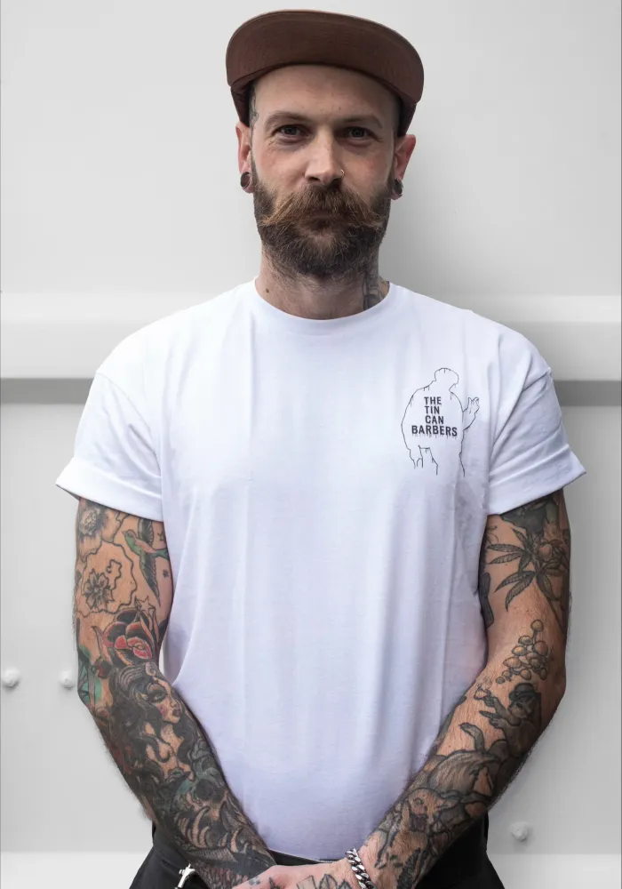
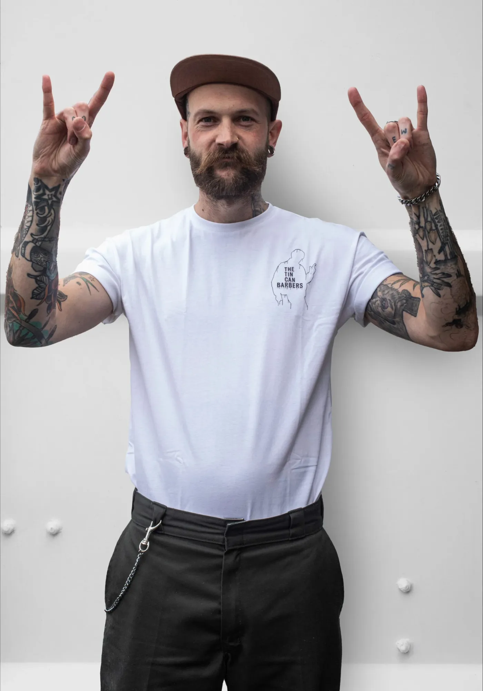
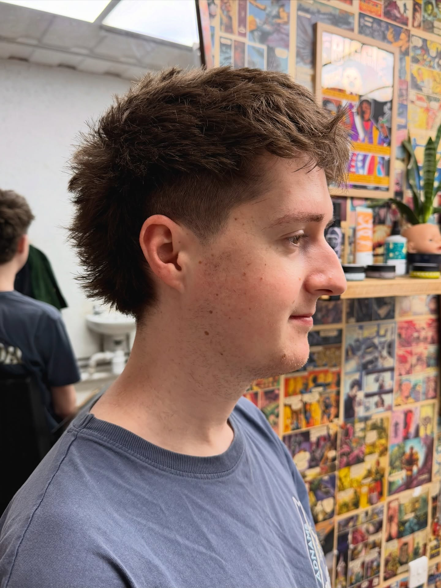
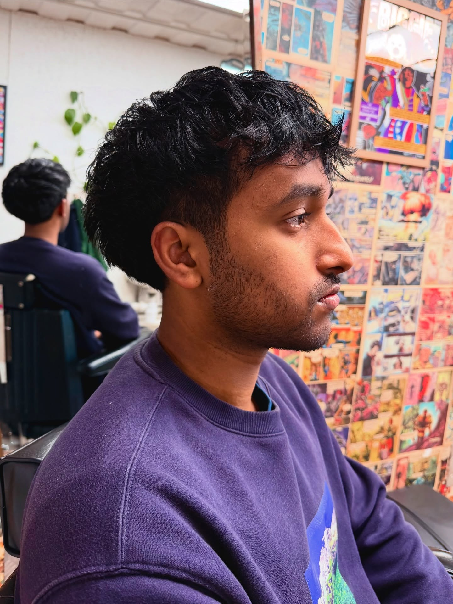
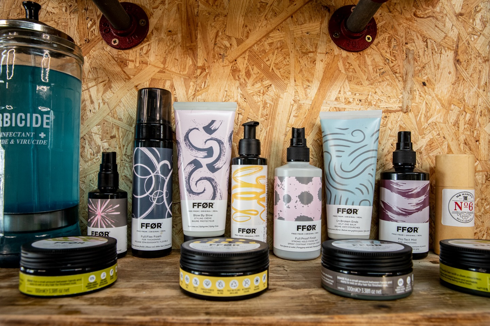

The Best and Brightest of Brighton
The Team, Ally and Dan, have a combined experience of over 25 years in the haircare industry, ensuring they can meet your needs regardless of what they are. From Mullets to Skin Fades, they've got you covered!
I’ve been cutting hair for over 10 years now, and opened The Tin Can Barbers with Dan to create a space that felt a little different — calm, green, down-to-earth, and rooted in the community. I’m into postmodern cuts, skinhead styles, mod cuts and mullets — basically anything with a bit of subcultural flair. That said, I’m all about making haircuts last, so whether it’s a sharp skin fade or a textured scissor cut, it’s got to grow out well and still look good.
Outside the shop, you’ll usually find me skating, chasing after my daughter, making music, or trying to get plants to grow in places they probably shouldn’t. My chair’s a space to feel comfortable, chat if you fancy it, or just enjoy a bit of peace while I focus on the details. Please never expect me to be running on time.


I’ve been in the hair industry for 20 years, starting out as a hairdresser before moving into barbering to master both sides of the craft. I’m now proud to be co-owner of Tin Can Barbershop, where I bring that experience to every cut. I love working with curly hair, longer styles like mullets, and a clean, tight fade.
I’m a pretty chilled, quiet worker—though depending on the day, the playlist, or how much sleep the kids let me have, I might be full ADHD and chatty as hell. Outside the shop, I’m all about family time, catching live Stoner Doom metal gigs, baking sourdough bread, cracking a few beers, and watching movies.



Just a tidy up for the edges.
For the more substantial beard.
One grade, all over. Simple.
A lot off the top, a little off the front
Shawn has been cutting my hair for a while now and is a great barber. Always feel so welcomed during my visits to the Tin Can Barbers. The Tin Can crew have always been so understanding and welcoming on every visit. Shawn is a lovely guy who always listens to what I want from my cut and makes sure I’m super happy with what he’s done.
After relocating back to the area I wanted to try and find a reliable barbers. Tin Can Barbers did not disappoint. Dave is amazing! He listened. He understood the assignment. He was able to manage my ever changing hair texture. Big shout out to Dave. Thank you. I will definitely be coming back.
Their website sold me on using them because of their Ethos, honesty, and because they had beards! Rare to find barbers that have any care for beards. Met Ollie and Aaron, both very welcoming, and Aaron did a fantastic job of getting my beard back under control and in shape after a really bad cut (by myself) and a clean head shave.
We are primarily appointment-only to ensure every client gets the time they deserve. However, we occasionally have last-minute gaps—check our Instagram stories for daily availability.
Trafalgar Street car park is a 2-minute walk away. There is also limited pay-and-display parking in the North Laine area, but it fills up fast!
We require at least 24 hours notice for cancellations. This gives us a chance to fill the spot for someone else on the waiting list.